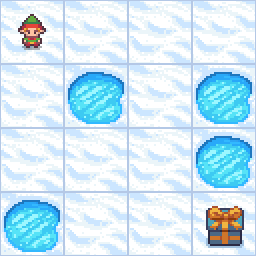
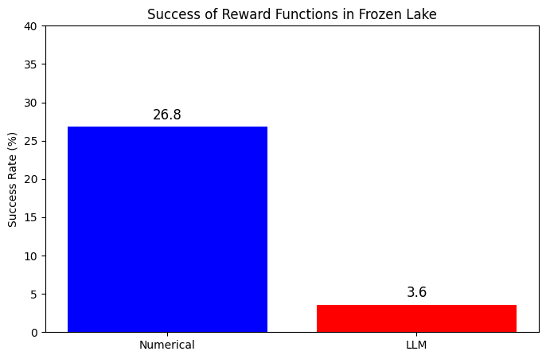
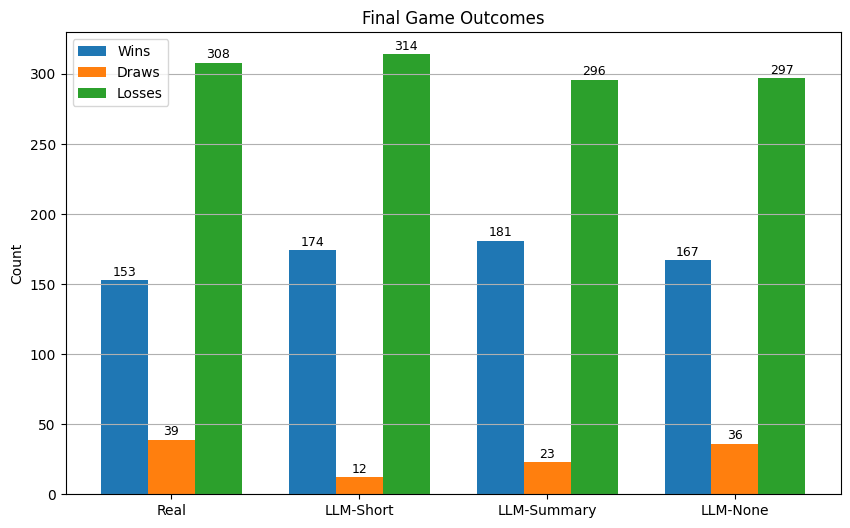

Reintegrating AI: LLM-generated Reward Functions
Overview
Project Description
Reintegrating AI explores whether large language models (LLMs) can generate the reward functions used to train reinforcement learning (RL) agents. Traditional RL relies on hand-crafted mathematical reward models that are tailored to one specific task, making them difficult to reuse or scale toward Artificial General Intelligence (AGI). Instead of writing those equations by hand, we prompt an LLM with a description of the task and let it score the agent's moves in natural language.
This project was completed for CSCI 2951X: Reintegrating AI, taught by Professor George Konidaris at Brown University. The source code is available on GitHub.
Research Questions
- How can reward functions be generated or approximated by an LLM based on human-preference prompts?
- Can these language-based reward functions perform better than a traditional mathematical reward function?
Contributions
- A generalized way to provide reward functions for training RL agents
- Integration of LLMs into the model training process, advancing toward AGI
- Making AI more intuitive and accessible for people with lower technical backgrounds
Methods
We built on a Q-learning framework and replaced the standard reward function with responses from an LLM. At each step, the LLM is given the agent's current state, next state, and action, and returns a numeric score. We tested this approach across two OpenAI Gymnasium environments, each run over hundreds of episodes to ensure statistically meaningful results.
Experiment 1: Frozen Lake
A 4x4 grid where the agent must navigate from a start tile to a goal while avoiding holes. The LLM was given a textual map of the grid, the Manhattan distance to the goal, and few-shot examples rating moves from -5.0 (very bad) to 5.0 (excellent).
- Spatial reasoning: we encoded the grid layout (S = start, F = frozen, H = hole, G = goal) so the LLM could reason about the agent's position.
- Loop avoidance: a sliding window of recent moves let the LLM detect and penalize cyclic behavior.
- Long-term memory: conversational history (context length 4096) helped the agent avoid repeating mistakes.

Experiment 2: Blackjack
A card game where the agent decides whether to hit
or stick, aiming for a hand value close to 21
without going over. We compared the environment's native
numeric reward against an LLM that scored each move from
0.0 (bad) to 1.0 (excellent).
We evaluated three memory modes for the LLM reward signal:
- Short-term memory — a window of recent transitions
- Summary memory — periodic natural-language summaries of play
- No memory — only the current move, with no history
Results
Frozen Lake: Underperformed
The LLM-based reward successfully trained an agent to complete
the environment, though at a lower success rate than the
traditional reward function.
- Consistent gradient: the LLM produced a graded, informative reward signal rather than binary success/failure.
- Pattern recognition: distinguishable reward clusters showed the LLM responded differently to looping, falling, or risk-taking behavior.

Blackjack: Competitive
LLM-based reward shaping matched or beat the real-reward
baseline. The LLM-Summary variant achieved the most wins
(181), ahead of LLM-Short (174), LLM-None (167), and the real
reward baseline (153).
- Memory matters: in post-training evaluation, LLM-Summary reached a 36% win rate vs. 33% for the real reward, while LLM-None lagged at 26%.

Discussion
Working with LLM-generated rewards surfaced several practical lessons about prompting, environment complexity, and resource constraints:
- Prompt shaping is critical: LLMs often ignored the requested response format until we supplied many few-shot examples covering very bad to excellent moves.
- Rule complexity outweighs action-space size: Lightweight models like TinyLlama did well on Frozen Lake (4 actions) but failed to differentiate rewards in Blackjack (2 actions) because they didn't fully understand the game's rules.
- Overfitting: When no holes appeared in the upper rows, the LLM over-rewarded the agent and discouraged it from moving toward the goal — fixed by explicitly penalizing backtracking.
- Computational limits: With access only to university VMs and laptops, we couldn't run the largest, most capable LLMs, which constrained the experiments.
Conclusion
By showing that LLM-derived rewards can rival — and sometimes surpass — traditional numeric reward functions, this work supports integrating natural-language understanding into the core mechanics of reinforcement learning. The approach lays groundwork for more human-aligned reward shaping without extensive manual engineering, especially when designing a reward function by hand is impractical.
Most exciting is the accessibility angle: natural-language reward functions could let people train and specialize RL agents without ever learning the underlying math. In other words, generalizing RL this way moves us toward developing AI and AGI just by saying what we want done. With more compute and larger models, future work could extend this to more sophisticated environments and richer game rules.